阴阳烛
- 何谓阴阳烛
- 解剖阴阳烛
- 阴阳烛的种类
- 应用阴阳烛
何谓阴阳烛
目前的图表理论中，有两种划线方法是最被广泛应用的，分别是柱状图(Bar Chart)及阴阳烛图(Candle Stick)。柱状图只是纪录当天的最高、最低及收市价，一种平铺直述的纪录；而阴阳烛则会比较当天的开市价是高于或低于收市价，增加了一项即市的纪录。由于有着短期的纪录，所以会对未来市况的短期走势有指示作用。而对大局或长远走势来说，两种图表所得出的结果是一致无疑的。
无论是用计算器显示图表或用纸张人手纪录，由于阴阳烛图每天所占的面积较大，所以只能在同一画面中显示出中期走势；而由于柱状图较为压缩，所以在同一画面中能显示较长期的走势。至于图表形态的应用，两者亦完全没有分别的。阴阳烛是七十年代日本期货市场的衍生品。当时由于日本期货市场的即市波动较大，于是引发了一种纪录即市变化的阴阳烛线图来。其后美国期货迅即采用此方法，到如今无论外汇、黄金、期货或股票均完全接受了这种画图方法。
解剖阴阳烛
阴阳烛的构成要的是白色或空心柱来显示是日之收市价高于是日之开市价，而无需理会上日之价位与是日价位之比较。相反地，如是日收市价低于是日之开市价，则以黑色或实心来显示。而两种方法之共同之处，高低价位均以幼线来显示。
阴阳烛的种类
-
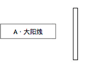
只有一条空心柱，其上及下并无幼线显示最高或最低价，因为是日开盘之后，并无下跌，而一直上升至收市，而又是以最高价收市。此种情形，示意一种强烈的升势，意犹未尽，通常翌日仍有若干上升空间。
-
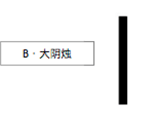
只有一条实心柱，其上及下并无幼线显示最高或最低价，因为日开盘之后，并无上升，而一直下跌至收市，而是是以最低价收市。此种情形，示意一种强烈的跌势，意犹未尽，通常翌日仍有若干下跌空间。
-
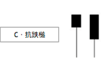
在一个长期跌势之后，而出现这种抗跌槌，表示跌势即将完结，跌幅正在减少中。其尾巴越长则应验越快。这种形态虽开市后一直下跌，但收市前却出现反弹，只是力度不够，未能收在开市价之上而己。如翌日再出现下述的上升槌则走势更是明显。
-
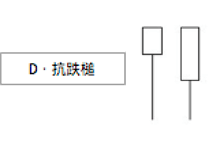
先跌后涨之走势，是一种短期转角市的先兆，买方是在好淡争持中续渐转强而非实时转强。在长期跌势后更为明显，而尾巴越长则转势越近，这亦属于单日转向的形态之一。转势随时会在翌日出现。
-
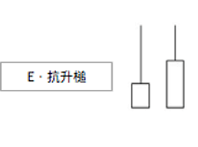
在一个长期升势之后，而出现这种抗升槌，表示升势即将完结，升幅正在减少中。其尾巴越长则应验越快。这种形态虽然开市后一直上升，但收市前却出现回吐，只是力度不够，未能收在开市价之下而己。如翌日再出现下述的下跌槌则走势更是明显。
-
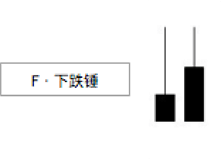
先升后跌之走势，是一种短期转角市的先兆，卖方是在好淡争持中续渐转强而非实时转强。在长期升势后更为明显，而尾巴越长则转势越近，这亦属于单日转向的形态之一。转势随时会在翌日出现。
-
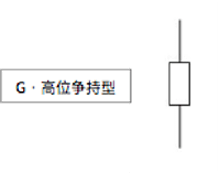
此是一种代表好淡争持甚为激烈的走势，但始终仍是好友胜出。若此种情况是出现在长期的升势后，则是一种升势即将完结之兆。但仍会有一段距离，不会马上出现，只不过是要处于戒备状态。获利货应实时沽出，未有获利之货仍可等一段短时期；如新入市则应以即市为目标，不可作太长线之长仓。因为买家己开始受到考验。通常此情况要配合较大的成交量才算成形。
-
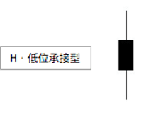
这是一种强弩之末的标准形态，若是接着第G项高位争持形而出现。则未获利之长仓仍应尽早沽出为宜。因为转势虽不一定在翌日出现，但机会甚大，有时无需经历其他形态便实时转入下降形态。此种形态通常称为欲涨乏力形。是表示好友与淡友均经历一种极高同时又极低价的争持，距离亦相当之远，即所谓过山车式的即市市况。由于前景仍未明朗，所以收市价无论怎样，均在开市价附近。买卖双方都甚为谨慎，不敢冒险。
-
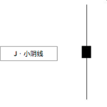
这是一种强弩之末之标准形态，若接着第H项低位承接形而出现。则未获利之短仓应尽早回补为宜。因为转势虽不一定在翌日出现，但机会甚大，有时无需再经历其他形态便实时转入上升的形态。此种形态通常称为欲跌乏力形。是表示好友与淡友均经历一种极高同时又极低价的争持，距离亦相当之远，即所谓过山车式的即市市况。由于前景仍未明朗，所以收市价无论怎样，均在开市价附近。买卖双方都甚为谨慎，不敢冒险。
-
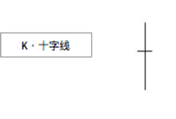
这是一种转势的最后通牒，无论是上升或下跌。是一种好淡争持而收市价刚好与开市价相同。成交量亦在萎缩中。此种情况亦称为悬崖勒马，再不改变思想有可能会跌入万劫不复之深渊中。
-
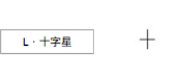
十字线与十字星之共同之处均是开市价要巧合地与收市价相等。由于此种巧合不一定出现，所以转势时不一定会出现这两种形态。此项十字星的出现则表示牛皮市即将来临，如出现在牛皮市中时则表示牛皮市尚要运行一段时期。
-
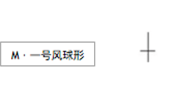
反攻前奏形，卖方虽然在大部份之市场时间中占优，但最后买方仍能够收复失地。卖方应如气象台般悬挂出一号戒备信号，因这甚有可能是暴风雨的前夕。这种形态亦称为T字形。
-
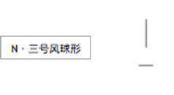
反攻前奏形，买方虽然在大部份之市场时间中占优，但最后卖方仍能够收复失地。买方应如气象台般悬挂出三号戒备信号，因这甚有可能是暴风雨的前夕。这种形态亦称为倒转T字形。
应用阴阳烛
A. 上升槌──大阳烛──小阳线──抗升槌──十字星（线）
B. 下跌槌──大阴烛──小阴线──抗跌槌──十字星（线）
C. 十字星在若跳空出现在一轮升势然后，称为“射击之星”，是转势的一种预兆。
D. 十字星在若跳空出现在一轮跌势然后，称为“黎明之星”，是转势的一种预兆。
E.三只乌鸦在树上：在一轮升势后，连续出现三枝阴烛，示意调整尚未完结，即使有反弹，只属短暂，跌势仍会维持一段时期。
F.三朵白花在地上：在一轮跌势后，连续出现三枝阳烛，示意升浪己开始，即使有调整，只属短暂，升势仍会维持一段时期。